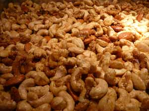

Mom butters nuts

I realize that the holidays are over and everyone has moved on, but I have a hard time letting go. I finally figured out how to review photos on my new camera and discovered a great shot of the roasted nuts we made for the party. It seems a shame to waste it, and they were delicious, too. Perhaps not quite as wonderful as Mark Bittman would have you believe, but definitely worth making.
I’ll tell you what, I think of myself as a cynic, and I believe what they say, that a cynic is a disappointed idealist. I must be really gullible, because I continually find myself falling for hyperbolic cant, such as the kind that promises to “erase the appearance of fine lines and wrinkles within 14 days”, or what Bittman says about these nuts: “they are a revelation, so far from canned mixed nuts that you may have trouble believing it.” Yes, they were good, but not a spiritual experience.
Roasted Buttered Nuts from Mark Bittman’s How to Cook Everything cookbook
- 2 cups unsalted mixed shelled nuts – we tripled the recipe and used cashews and walnuts with a few almonds
- 1 tablespoon peanut oil or melted butter – for the triple recipe I used 2 T. peanut oil and 1 T. butter
- Salt and pepper to taste
- 1-3 tablespoons of any spice mixture, such as chili powder or curry powder – I used half mild and half hot curry powders
*Note: Bittman doesn’t call for it but I added 1/4 cup sugar because I like that spicy/sweet flavor.
1. Preheat the oven to 450º F. 2. Toss the nuts in a bowl with the oil or butter and all the seasonings. Spread on a large sheet pan and roast, shaking occasionally, until lightly browned, about 10 minutes. Cool before serving; they will crisp as they cool.
p.s. Leland and Nathan gave me the camera for Christmas so expect a great improvement in my photos shortly!
Comments
Very cool photo.
I do find that freshly toasted nuts are a whole lot nicer than the canned. but I do know what you mean re Mr. B.
Add a comment